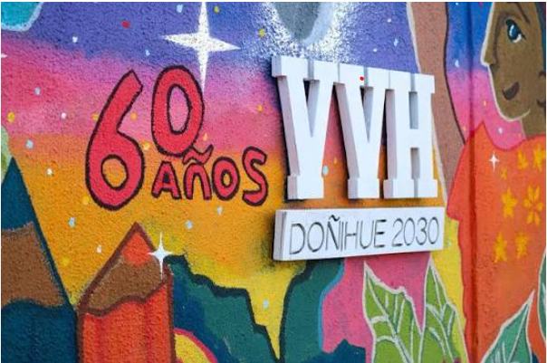
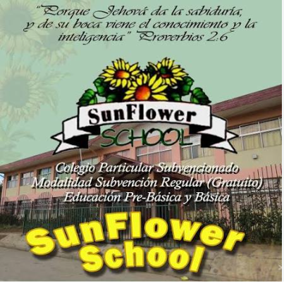

Colegios de estudio
Liceo comercial Vate Vicente Huidobro
Es un establecimiento de educación técnico-profesional ubicado en la comuna de San Ramón, Santiago, perteneciente a la red de la Fundación Educacional Comeduc.
- Oferta académica: Ofrece formación técnico-profesional en especialidades como Contabilidad y Programación, orientada a la inserción laboral rápida y exitosa.
- Ubicación: Se encuentra en la calle Doñihue 2030, San Ramón, Santiago.

Sunflower School
El Colegio Sun Flower School de Labranza (Temuco) es un establecimiento educacional de orientación cristiana perteneciente a la Fundación Educacional Monte Grande.
- Ubicación y Contacto: Se encuentra en la zona de Labranza, Temuco, con teléfono de contacto +56 45 232 2381
- Admisión: Ya se encuentran operando los procesos e informativos de admisión escolar (como el periodo para el siguiente año académico).

Colegio Saint Maurice's
Es un establecimiento educacional particular subvencionado con régimen de financiamiento compartido, de orientación laica, ubicado en la comuna de Cerrillos, Santiago
- Ubicación: El Mirador 1543, Cerrillos, Santiago.